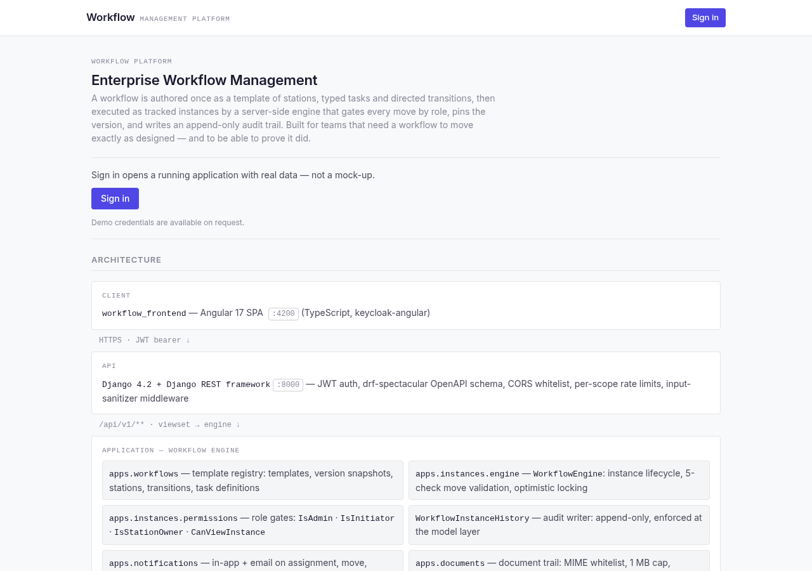
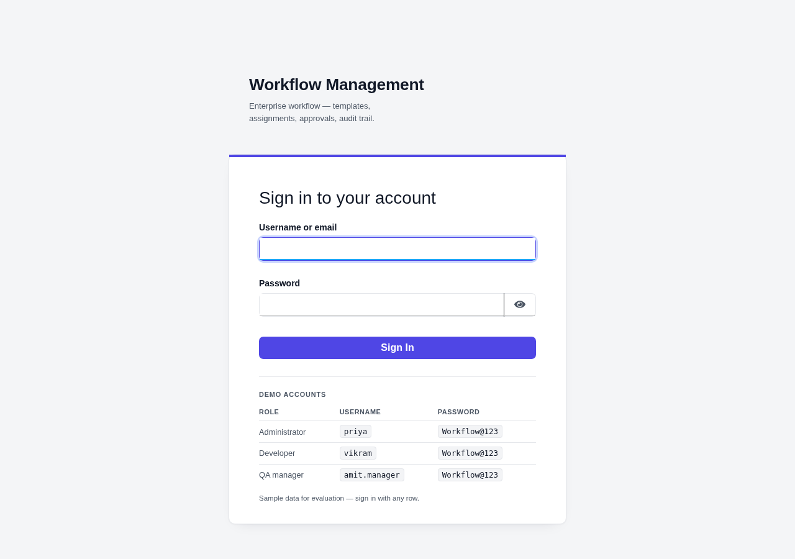
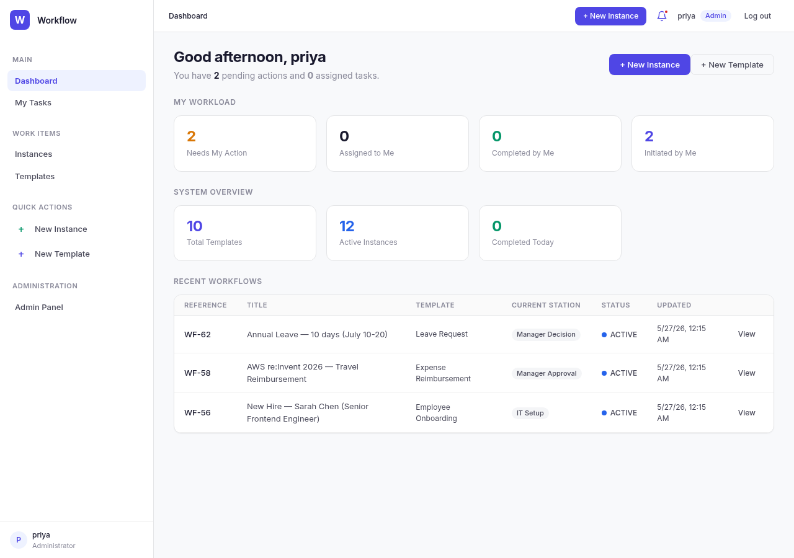
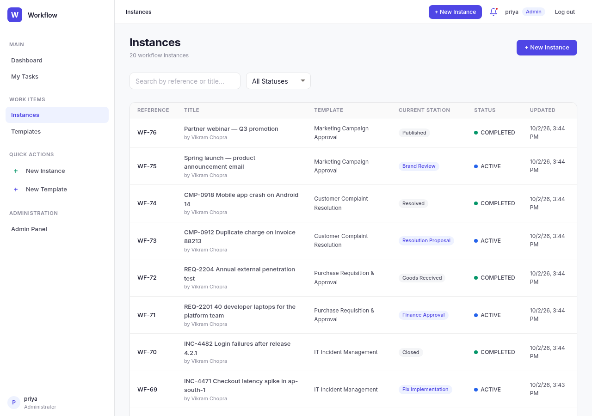
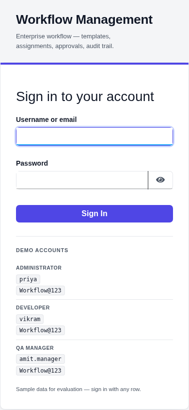
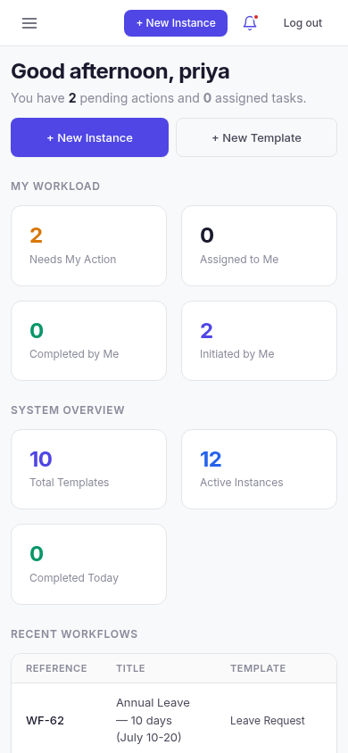

A workflow platform where organisations define reusable templates, configure stations
with role-based permissions, move instances between those stations, and keep a history of
every move. Most workflow code is a status column; this is the shape the problem takes
when versioned templates, per-station authority and an auditable trail are treated as the
requirements rather than as the parts to skip.
In plain terms: A system for moving work between people: who may act at each step, what must be done before work moves on, and a record of everything that happened.
Deployed behind an nginx edge: an Angular 17 client, Django 4.2 with Django REST
Framework, PostgreSQL 16, and Keycloak for sign-in. Instances move between stations
through one engine that runs five checks in order, and nothing commits unless all five
pass.
On a fixed address — self-hosted, so it is up whenever the machine is running. The sign-in page displays its own demo accounts, so nothing else has to be arranged.
The client posts a move request naming the target station and optional remarks.
Authentication extracts the bearer token, resolves or creates the local user, and synchronises the token's realm roles into Django groups.
A permission gate on the viewset checks the caller is allowed to act on this instance.
The request body is validated and the target station resolved.
The workflow engine runs five checks, in this order, and all must pass: the instance is active; the user's groups intersect the roles the current station allows; a transition from the current station to the target exists in this template version; every required task at the current station is complete; and the optimistic lock still holds — the update matches the expected version, and zero matched rows means a conflict.
On success, inside one transaction: the station and owner are updated, the version is incremented, a final station completes the instance, a history row is written, and pending task executions are created for the new station.
After the transaction commits, in-app notifications are created for the station's users, and email is sent if mail is configured.
The API is published as an OpenAPI schema generated by
drf-spectacular, with Swagger UI at
/api/v1/docs/.
Key decisions
Five-check workflow engine. Every station change passes one engine that validates instance state, station role, transition, task completion and the optimistic lock before committing. Movement cannot happen by any other path.
Stations own roles, not users. A station declares which roles may act there, so authority is per-station rather than global. Nine realm roles separate administration, initiation, operation and audit.
Templates are versioned. Publishing freezes an immutable version holding the stations, transitions and task definitions, so a running instance stays pinned to the version it started on even as the template moves on.
Four task types are executable configuration. Approval, a form built from a JSON schema, a document upload with a MIME whitelist and a 1 MB cap, and a confirmation checklist. Payment, API and email task types are declared in the model but are not handled by the engine, so they are not implemented.
Audit that resists editing. Instance history is exposed list-only, its model refuses updates on save, and the Django admin denies add and delete.
Instance sharing by token. Each instance carries a UUID token that produces a share link.
Hardening, as implemented. Whitelist-only CORS, scoped throttling on authentication and upload endpoints, middleware that strips HTML tags from text input, security headers, a 1 MB upload cap with a five-type MIME whitelist, and the Django admin moved off its default path.
Runtime images and deployment. The back end image is python:3.12-slim and the client build image is node:20-alpine; the stack is wired together with Docker and Compose.
Phase status
Status as recorded in the repository
Phase
Status
Phase 1
Implemented
Phase 2
Implemented
Phase 3
Planned
The repository lists no contents for Phase 3, so no feature is attributed to it here.
Verified metrics
Counted from the repository and from static analysis of it
Metric
Value
Files mapped
104
Graph nodes
650
Edges
1,327
Flow candidates
17
Realm roles
9
Data models
11
Validation gates per move
5
Users seeded in the realm import
8
REST endpoints, repository's own figure
around 40
Route and endpoint nodes resolved by static analysis
17
The two endpoint figures count different things. Static analysis resolves 17 route and
endpoint nodes because Django REST Framework router registrations cannot be read
statically, so the lower number is a limit of the analysis rather than evidence of a
missing API. The graph figures come from a map synced three commits before the
repository's current HEAD.
Screenshots
Captured from the deployed build. The repository also carries a demonstration procedure
document with ten screenshots.

The landing page, before sign-in.

The Keycloak sign-in page. The demo accounts are listed in the table on
the page itself.

The dashboard after sign-in: workload and recent workflows.

The instance list, where an instance is opened and moved on.

The same sign-in page at 390px, where the accounts table stacks.

The signed-in dashboard at 390px, with the workload cards stacked.